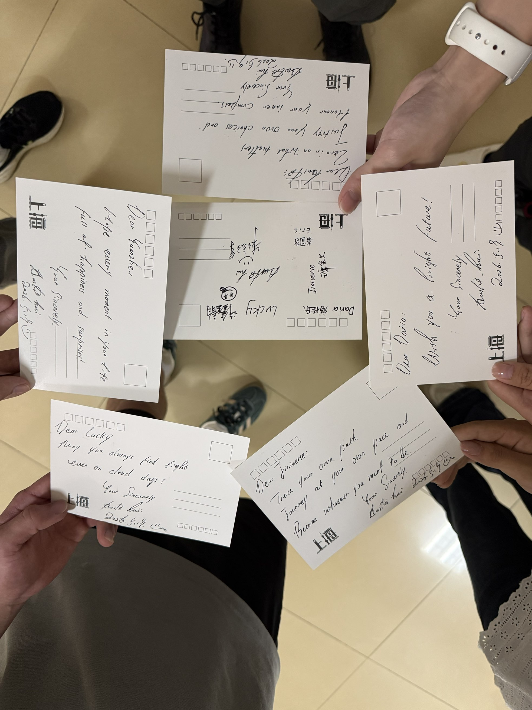
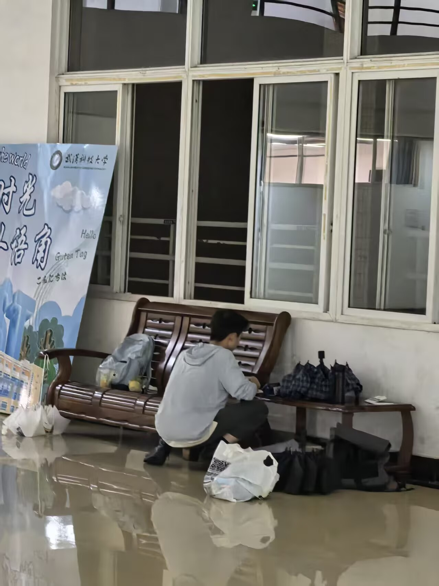
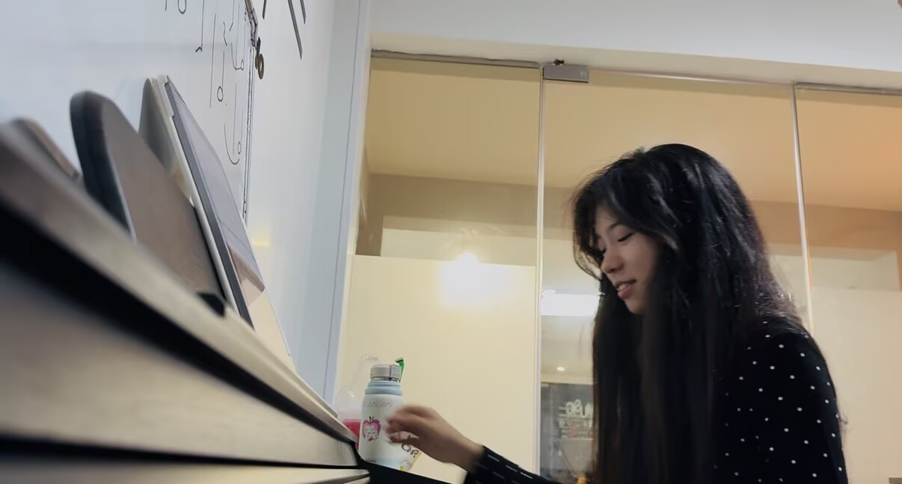
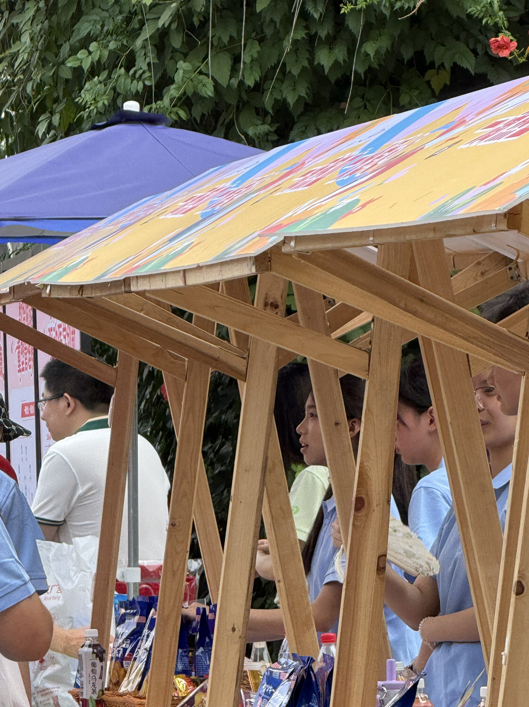

谭金贝：
见字如面，展信舒颜。
落笔之时，我们已相遇七十日，说长不长，说短不短，但这段时光让我有了很独特的体会，因此借这封信向你认真分享一些感受。
最开始在大讲堂的时候，我并没有刻意去认识谁，那次活动对我来说更像是一件临时的苦差事，但很巧的是，我们以声音结识，在这短短几天里给予了彼此一点鼓励，这些细小的瞬间，让我慢慢开始记住这段经历。
我并不打算枚举每一个细节，因为我慢慢意识到，生活其实不是一场连续剧，而是一个个难忘的瞬间拼凑起的回忆。或许未来某一刻驻足回望时，我已经不记得那天外语角聊了什么，但我会记得准备的零食和贺卡，还有一个按下快门记录背影的摄影师；或许我已经不记得我如何讲述自己的规划和感悟，但是会记得有人对我说过“我相信你一定会成为自己想成为的人”；或许我早已忘记那天弦乐四重奏的曲调，但我会记得那个被《月亮代表我的心》打动的牛。它们让我意识到，人与人之间最珍贵的莫过于“看见”，我不确定自己是否看见了那个喜欢音乐，但总说自己没有音乐细胞的你；那个被音乐打动，却又笑着把自己称作“对牛弹琴那只牛”的你；也不确定自己是否看见了那个面对陌生尝试时会紧张、会犹豫，却仍然愿意迈出一步的你。

但我想，谢谢你在一些瞬间里看见了我的认真和坚持。
其实我并不是一个对他人有强烈探索欲的人，因为我更习惯于专注自己。直到因为某种机缘巧合让我知道某人时间很赶却还是提交了自己“粗糙”的作品，我才开始慢慢注意到你的一些选择和状态。这不是一件轻松的事，但是你仍然坚持做了，真的超级厉害！如果换做我，我可能倾向于准备得更充分再出发，但你选择了行动本身，这让我重新理解了一件事：有些事情，并不一定要在“完全准备好”的状态下才可以开始。

录曲子那一次也让我印象深刻。那天本来只是一次普通的录制，但是让我有所感触的不是曲子弹得如何，而是一起完成《小星星》的过程。那不是一个人的演奏，与另一个人的喝彩，而是两个人慢慢配合、调整、完成的欣喜和满足。

如果说这段经历让我最大的感触是什么，我觉得不是某一个具体的事件，而是我开始慢慢意识到：生活是有很多瞬间组成的，有些瞬间当下看起来普通，但在回忆里会变得很清晰。
这段时间我也独处去思考了一些问题，比如我为什么会欣赏一个人，以及我在一段关系中真正看重的是什么。我发现我并不会因为不聊天或者不频繁联系而感到焦虑，相反，我依然可以很好的专注于自己的学习、生活和兴趣。
所以我也慢慢理解到，一种比较好的关系状态，可能是两个相对完整的人，在各自生活的基础上自然产生的连接。
回头看这段时间我们一起经历过的一些很零碎但真实的瞬间：大讲堂、运动会、外语角、合奏、交流，还有一些偶然的相遇与对话，这些事情本身也许都不算特别，但在我这里，它们构成了一段很完整的记忆。我珍惜的并不是某一个结果，而是这些真实发生过的过程。
后来在看《心灵奇旅》的时候，也让我对一些事情有了新的理解。人生不仅仅是为了某个明确的目标而存在，更重要的是感受过程本身，感受那些看似普通却闪光的瞬间。
在这里，我也想与你分享两句电影里很好的话 (摘自弹幕:-)：
“在很多幸福没有被发现的时刻，他们都有一个共同的名字，叫平凡而普通的一天。”
“我们所度过的日常，实际上是连续不断发生的奇迹。”
我不知道未来会如何发展，也不知道我们之后会以什么样的方式继续相处，但有一点我现在可以确定的是：你对我来说是一个很特别的人。这种特别不一定需要被定义成某种关系，但它是真实存在的。
我想说这些话，并不是为了得到一个结果，也不是为了改变什么，而是出于一种很简单的想法：我觉得这段经历对我来说很重要，而你是其中很重要的一部分，所以我想让你知道。
我想我确实是喜欢你的。
这份喜欢不是冲动，也不是短暂情绪，而是在这段时间里逐渐形成的真实的感受。
它来自那些共同的瞬间，也来自我对你的欣赏。
但我也想说，这不是一种要求回应的表达，也不是一种压力。
我只是觉得，如果不说出来，可能会留下遗憾。
未来会如何，我不知道；
你如何选择回应，我都尊重；
但无论结果如何，这段相遇对我来说都非常珍贵。
谭，希望你始终坚持自己坚持的事，成为自己想成为的人。
Trace your own path,
Journey at your own pace, and
Become whoever you want to be.
借此机会，我想告诉你Jiniverse的另一个意思，它就在你的名字里面——金星。
古人曾经以为启明星和长庚星是两颗不同的星星，后来才发现，他们指的都是金星。
启明星照亮开始，长庚星陪伴长夜，而你让我联想到的，是这种真实而丰富的存在状态。我见过你台上的闪闪发光，工作的干练认真，也看见过你在不确定下的紧张和犹豫，它们都很好，都是真实而纯粹的你，我也有幸见证这一切。

谢谢你。
愿你一切都好。
言不尽意，再祈珍重。
朱俊珲
2026.6.24